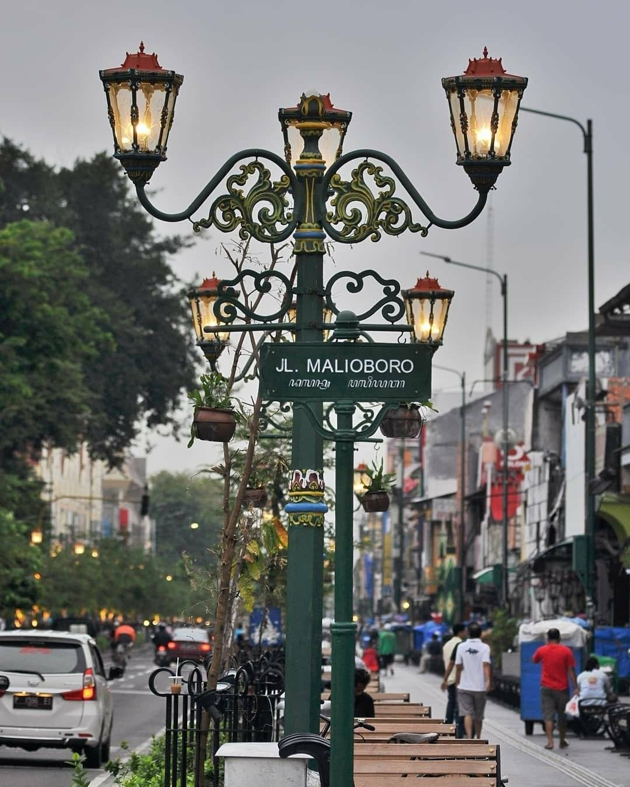
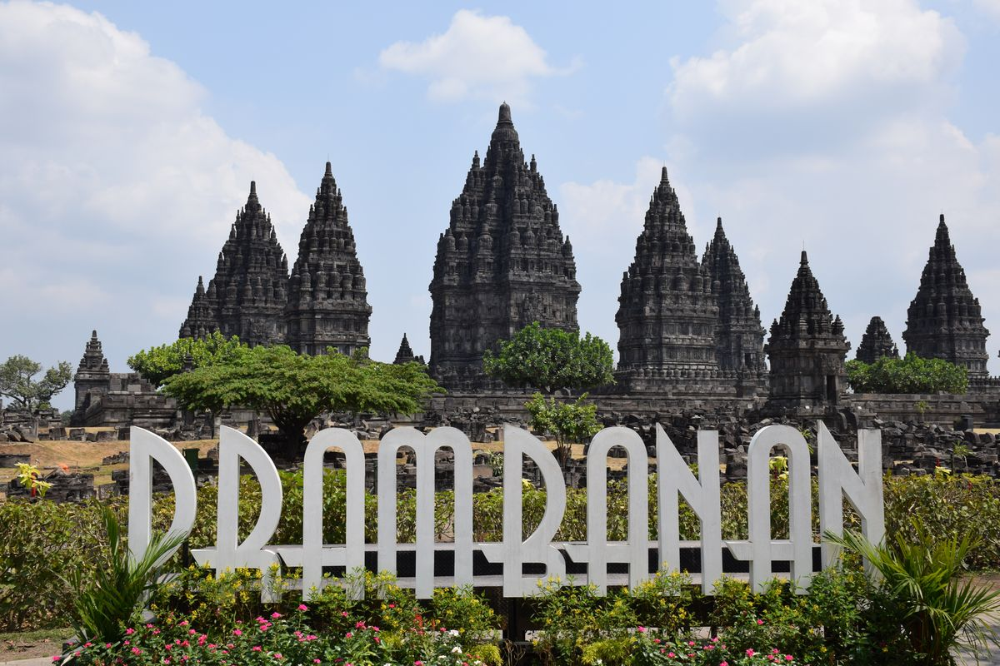

YOGYAKARTA, INDONESIA
Jelajahi Jogja Dan Kenali Kisah di Baliknya.
Temukan perjalanan yang lebih bermakna di kota yang selalu punya cara untuk membuatmu rindu.
KOTA BUDAYA · SEJUTA KISAH
01 / TENTANG JOGJA
LEBIH DARI SEKADAR TUJUAN
Tempat tradisi dan hari ini berjalan berdampingan.
Pagi dimulai dengan aroma kopi dan suara becak yang melintas. Siangnya menyusuri candi dan galeri, malamnya menikmati angkringan, obrolan panjang, dan alasan untuk kembali.
Baca cerita tentang Jogja Baca panduan Tugu Jogja
03
HAL YANG SELALU
MENEMANIMU: BUDAYA,
RASA, DAN KERAMAHAN.
MENEMANIMU: BUDAYA,
RASA, DAN KERAMAHAN.
PILIHAN UNTUK PERJALANANMU
Mulai dari yang istimewa.

01 KOTA · BELANJA · KULINER Malioboro Jalan santai, belanja, dan suasana malam kota. ↗
02 WARISAN · SEJARAH Candi Prambanan Arsitektur candi dan kisah warisan budaya. ↗ 03
BUDAYA · KERATON
Keraton Yogyakarta
Mengenal tradisi dari pusat kebudayaan kota.
↗
03
BUDAYA · KERATON
Keraton Yogyakarta
Mengenal tradisi dari pusat kebudayaan kota.
↗
 04
ARSITEKTUR · SEJARAH
Taman Sari
Ruang bersejarah dengan lorong dan kolam.
↗
04
ARSITEKTUR · SEJARAH
Taman Sari
Ruang bersejarah dengan lorong dan kolam.
↗
 05
ALAM · SENJA
Hutan Pinus Pengger
Menepi di antara pepohonan dan panorama perbukitan.
↗
05
ALAM · SENJA
Hutan Pinus Pengger
Menepi di antara pepohonan dan panorama perbukitan.
↗
 06
KOTA · JALAN-JALAN
Titik Nol Kilometer
Jelajahi bangunan lama dan denyut pusat kota.
↗
06
KOTA · JALAN-JALAN
Titik Nol Kilometer
Jelajahi bangunan lama dan denyut pusat kota.
↗
“
Jogja terbuat dari rindu,
pulang, dan angkringan.
SEBUAH PERASAAN YANG SULIT DITERJEMAHKAN
PERJALANAN TANPA RIBET
Jelajahi dengan tenang.
Nikmati setiap langkah.
Kenali kisah kota, temukan tujuan, lalu ikuti kabar terbaru dari Yogyakarta.
Lihat semua destinasi